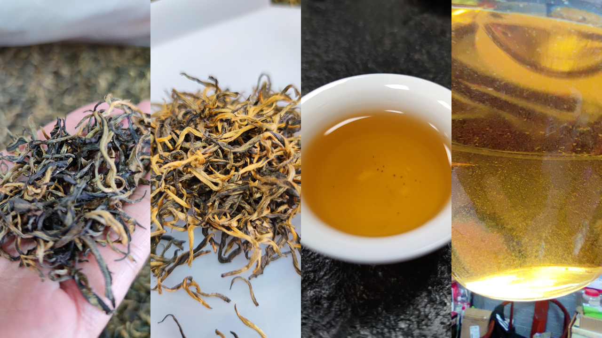
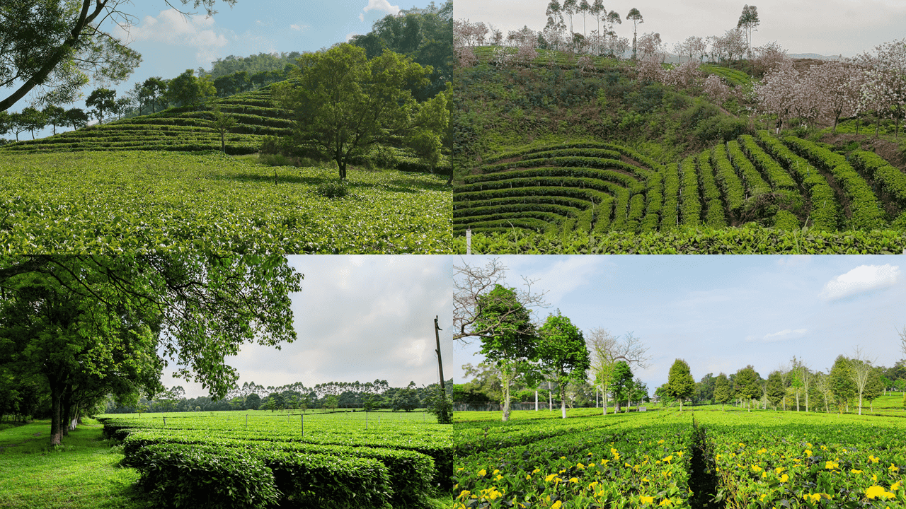
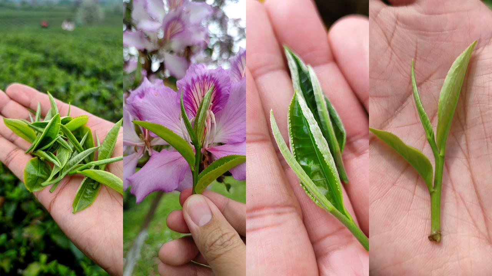
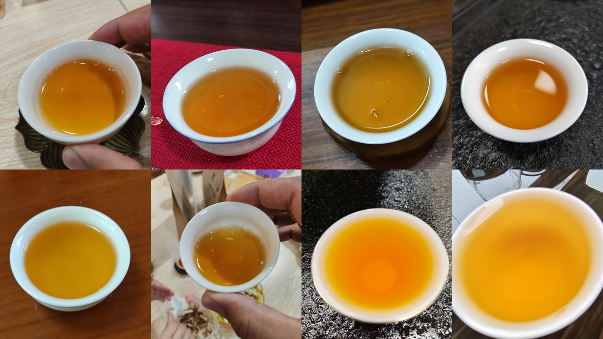
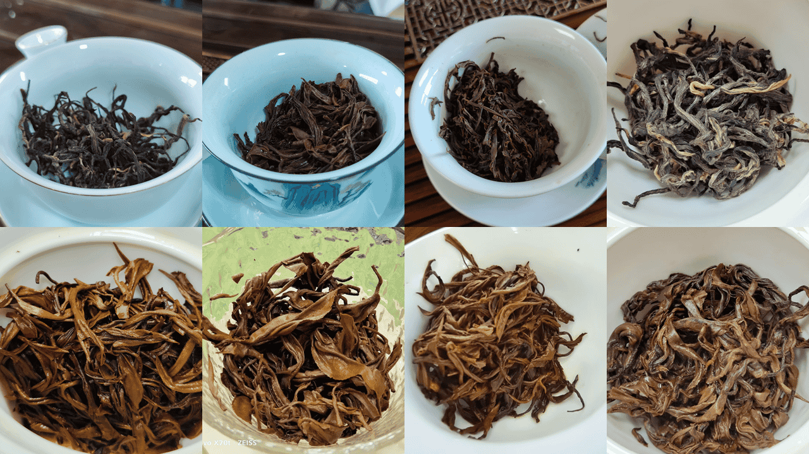
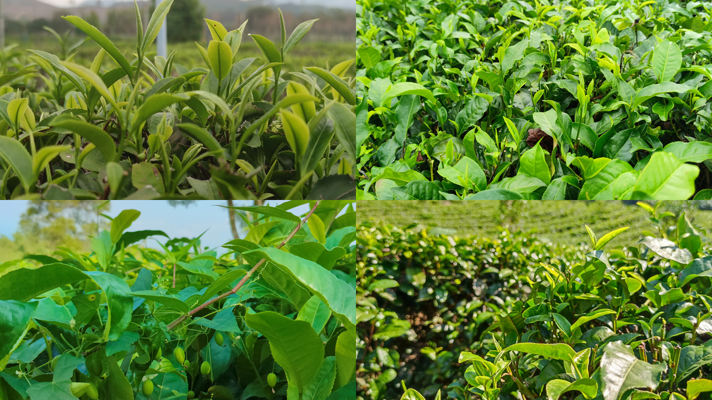
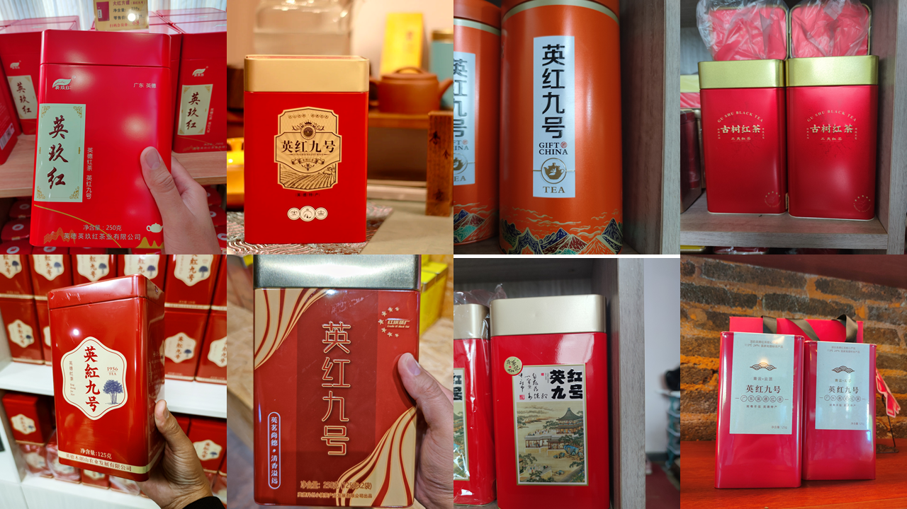
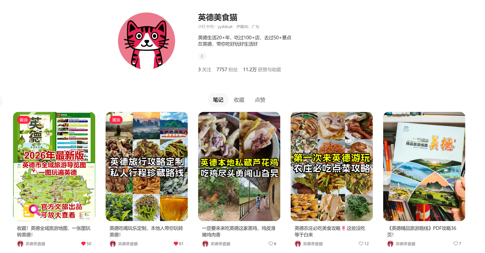

英德红茶购买攻略
本地人带路，买茶不踩坑
认识英德红茶
3 分钟了解为什么英德红茶值得买。
英德红茶是什么？

英德红茶是广东省英德市特产，为中国国家地理标志产品。 与云南滇红、安徽祁红并称中国三大红茶，被誉为「中国红茶后起之秀」「世界高香红茶」。 核心品种「英红九号」由广东省农业科学院茶叶研究所于 1961 年选育， 茶汤红艳明亮、金圈明显，香气浓郁纯正、花果香突出。 自问世以来，远销西欧、北美、大洋洲、中东等 70 多个国家和地区。
历史与国际声誉

英德茶业历史悠久，可追溯至 1200 多年前的唐朝。
现代英德红茶始于 1955 年，当年试种云南大叶种成功，1959 年成功试制出英德红茶。
1963 年，英国女王在盛大宴会上用英德红茶招待贵宾，英德红茶由此享誉国际。
2023 年 4 月 7 日，中法两国元首在广州松园举行非正式会晤，英德红茶·金毛毫作为「国茶」代表用于茶叙现场接待。央视著名主播康辉品尝后赞美「挺甜的，茶香」。
如今，英德红茶已入选首批中欧地理标志保护清单，国际影响力持续提升。
感官特征

外形
条索紧结肥壮、乌润油亮、金毫显露；特级金毫茶「金毫满枝、金黄油润」。
香气
鲜浓纯正、花香明显、高锐持久；金毫茶「嫩浓芬芳、毫香清幽」。英红九号具有自然的花果香，高长持久。
汤色
红艳明亮、金圈明显。
滋味
浓、强、鲜、爽；浓厚甜润、醇滑回甘、收敛性强但不苦涩。英红九号耐泡，可达 7–9 泡。
叶底
柔软红亮、匀整。
依据：清远市地方标准 DB4418/T 0001—2018（地理标志产品 英德红茶）
核心产区

英德红茶主产于英德市境内，以下为四大核心产区，各有风味特色。
英红镇 发源地 + 产业中心
英德红茶诞生地、核心中的核心。原广东省英德茶场（1951 年）所在地，红旗茶厂、广东省农科院茶叶研究所均设于此，是英红九号的标杆产区。
风味：高香、浓强鲜爽、花果蜜韵突出。
横石塘镇 石门台生态带
生态顶级、高端茶主产区，紧邻石门台国家级自然保护区。高山云雾、弱酸性红壤、山泉水灌溉，有机茶多。
风味：清甜细腻、毫香足、回甘长。
石牯塘镇 喀斯特高香区
老牌优质产区，喀斯特地貌，矿物质丰富。海拔 300–600 米，昼夜温差大，香气格外浓郁。
风味：香气高扬、滋味醇厚、耐泡。
石灰铺镇 性价比核心区
产量大、品质稳、性价比高，紧邻英红镇。丘陵缓坡，管理成熟、标准化程度高。
风味：浓强鲜爽、甜感足、日常口粮首选。
望埠镇、大站镇、浛洸镇、西牛镇：地理标志范围内，品质合格，价格亲民，多做口粮茶与大宗茶。
等级与价格
这是最核心的内容。按清远市地方标准，看懂这张表，没人能忽悠你。

| 等级 | 俗称 | 采摘标准 | 参考价格 （元/500g） |
适合场景 | |
|---|---|---|---|---|---|
| 特级一等 金毫茶 | 金毫 | 全芽头，金黄毫毛密布 | 800-1500+ | 高端送礼、收藏 | |
| 特级二等 金毛毫 | 金毛毫 | 一芽一叶初展，毫毛多 | 400-800 | 送礼、招待贵客 2023中法元首松园茶叙同款 |
|
| 一级 | 金英红 | 一芽一叶，汤色红亮 | 200-400 | 日常送礼、家庭品饮 | |
| 二级 口粮茶 | 英红九号 | 一芽二叶为主，口感醇厚 | 150-200 | 日常饮用、办公室用茶 | |
| 三级 | — | 一芽二三叶，滋味浓强 | 80-150 | 奶茶基底、大宗用茶、工业用茶 | 奶茶基底、大宗用茶、工业用茶 |
⚠️ 以上为产地参考价格，品牌包装、季节、年份等因素会影响实际售价。

从源头看懂价格：一斤干茶的成本构成
英红九号一般 4.5–5 斤鲜叶 → 1 斤干茶。以下是各季节鲜叶采摘工费（数据来自本地采茶工行情）：
| 季节 | 采摘时间 | 鲜叶工费（元/斤） | 折合干茶成本（元/斤） |
|---|---|---|---|
| 春茶 | 明前/头采，2–4 月 | 普通 8–15，高端 15–20 | 约 50 元 |
| 夏茶 | 5–7 月 | 3–5 | 约 15 元 |
| 秋茶 | 8–10 月 | 4–8 | 约 20–40 元 |
| 冬茶 | 少量 | 5–10 | 约 25–50 元 |
⚠️ 以上仅为采摘人工成本。各个环节的人工成本占到了红茶总成本的 6–7 成，其中采摘工人占整个成本的约 30%。
📊 英德市场茶青收购参考（据茶企老板介绍）：茶青最低收购价 8–10 元/斤，正常价约 15 元/斤，5 斤茶青约制 1 斤干茶，制成干茶成本约 75 元。干茶加工成本约 20 元/斤，加上日常除草施肥裁剪等成本，每斤干茶总成本约 120 元，大部分英德红茶每斤微利 20–30 元。有机茶成本价 400 多元/斤。
👨🌾 采茶工人收入：普通采茶工一月 2500–3000 元是常态，熟练工 3000–4000 元也很正常，最高记录一个月拿到过 5000 多元。春茶忙碌时节，一个劳动力一天最高可拿到 150 元。
常见踩坑案例
- 夏秋茶 / 陈茶冒充春茶：用去年卖不完的夏茶、秋茶、粗老叶，重新包装当季春茶或金毛毫卖。抖音很多商家用这招刷销量、做虚假数据，是本地最常见的坑。
- 「真包装，换内茶」调包：礼盒是英红、鸿雁等大厂正品，里面的茶叶被换成低价外地茶。特产店、导游店高发。
- 景区、服务区的散装茶：溢价 2–3 倍是常态。
- 年份越久越好？：不适用于红茶，建议 2 年内喝掉。
💡 避坑技巧：线上买茶优先选择发货地是英德本地的电商店铺。外地发货的「英德红茶」风险更高。
购买渠道
线上方便、线下放心，各有各的选法。
当地著名品牌

天猫/京东搜索品牌名 → 官方旗舰店。认准以下品牌：
- 鸿雁 — 广东省农科院茶叶研究所出品，英红九号标杆
- 英红 — 老牌国企背景，品质稳定，经典款多
- 上茗轩 — 专注高端，金毫/金毛毫口碑好
- 红旗茶厂 — 英德红茶发源地，历史底蕴深厚
- 积庆里 — 生态茶园规模大，产品线丰富
- 九鼎红 — 2026 年两会广东代表团专用茶，全茶园有机，性价比路线，适合入门
优点：方便比价、售后有保障；缺点：不能先尝后买。
直播带货
抖音/快手/视频号直播间常见的「99 元 6 罐」「199 元礼盒装」英德红茶。
⚠️ 本地人基本不会买。这类茶的品质非常一般，往往是夏茶或外地仿冒茶充数，包装比茶贵。不是所有叫「英红九号」的都是好茶。
线下实体店
首选品牌直营店与认证门店，品质有保障、价格透明，最大程度避开假货。
推荐：英德供销社农特产品超市——集合了众多大小品牌的茶叶，除了卖茶还有大量英德特产，性价比高，可以一站比较购买。正规渠道，品质有保障。
百花市场门口一条街 / 石灰铺镇红茶一条街：英德最集中的茶叶档口聚集地，各种品牌、等级都能找到，可以一家一家试喝比较，很多是茶园老板直销。档口老板往往跟茶厂关系熟，能拿到好货。
⚠️ 本地人提醒：百花市场及周边零散商铺混杂，存在贴牌、仿冒假冒英德红茶，选购务必谨慎。
✅ 认准正宗：外包装带英德红茶地理标志专用标识 + 证明商标，产品可扫码溯源产地与生产信息。
❌ 无地理标志、无证明商标、无溯源码的货品，一律不推荐入手。
优点：能试喝、能看到实物；缺点：需要会辨别，建议优先逛品牌直营店和认证门店。
茶厂直购
大部分生产性茶厂不是景区，人流量不够，所以不太支持零售散客直接上门购买。
⚠️ 出名的茶厂≈景区：积庆里茶厂、T3 茶厂、红旗茶厂，即使去到厂里买，价格跟市场差不多，并不会便宜太多。它们本质上是观光体验式消费。
本地人推荐购买方式
英德全市茶园面积 18.65 万亩，干茶年产量 1.83 万吨，汇聚近 900 家茶企、150 家茶叶合作社，15.5 万从业人员（英德总人口约 95 万，平均每 6 个人就有 1 个做茶）。本地人开玩笑说「随便出街买菜吃早餐都能遇到一个有茶园的茶老板」。
在英德，买到假英红九号的概率其实不高——它不像大红袍那样强调母株母树的概念。英红九号是政府与茶科所全市推广的经济作物，全英德的英红九号都是茶科所品种的子子孙孙。容易买到的不是假茶，是品质差的茶。
另一个冷知识：英红九号不强调核心产区。普通人基本喝不出产区区别，即使让专家来盲测也基本搞不清楚。不用为「核心产区」溢价买单。
本地人大多买品牌茶。日常自己喝会找相熟的茶园老板买散装茶，性价比高；送礼或待客则首选鸿雁、英红等品牌茶，品质有保障、拿得出手。不用担心喝到夏茶充春茶，更不会买到外地茶拼配的「拼茶」。
品牌也分大小：大品牌（鸿雁、英红等）有品牌溢价，适合送礼、追求品质保障；小品牌很多做得同样正规，工艺讲究、性价比高，是本地人的日常口粮首选。关键不是看牌子大小，是看有没有地理标志、溯源体系这些硬指标。
不推荐的渠道
拼多多低价杂牌店——以次充好、临期翻新 / 高速服务区、景区门口散装茶 / 路边厂家直销临时摊 / 直播间低价茶
挑选技巧
小白也能用的「三步鉴别法」，买茶时照着看就行。
第一步：看外形
好的英红九号条索紧结匀整，色泽乌润，金毫显露。 芽头越多、金毫越密，等级越高。如果条索松散、颜色发暗、碎末多，品质就差。
第二步：闻香气
干茶应有浓郁的甜香或花果香，没有霉味、陈味。 冲泡后香气高扬持久。如果闻起来有「青草味」或「酸味」，说明工艺有瑕疵。
第三步：品滋味
茶汤入口醇厚顺滑，回甘明显，不苦不涩。 好茶耐泡，一般能泡 6-8 泡仍有滋味。 如果第一泡就寡淡无味，或苦涩感重且化不开，质量不佳。
进阶：看茶汤

英红九号的茶汤应为红艳明亮，有「金圈」——即茶汤边缘有一圈金黄色的光圈。 金圈越明显，品质越好。如果茶汤浑浊发暗，说明发酵过度或储存不当。
冲泡方法

世界高香红茶，泡对了才能喝到好味道。
选水
选用天然泉水或纯净水，软水为宜。自来水含氯，会影响茶香。
择器
推荐白瓷盖碗，有利于呈现红亮汤色。玻璃公道杯观色，白瓷品茗杯品味。

冲泡三要素
茶量
茶水比以 1:30 为宜，即 5 克干茶加入 150ml 水。
水温
根据茶叶等级调整：
特级一等（金毫茶）：85°C
特级二等（金毛毫）：85–90°C
一级及以下：95°C 以上
英德红茶是世界高香红茶，水温高则香气扬，水温低则鲜味佳。
出汤时间
英德红茶内含物溶解快，出汤很快：
前 3 泡：3–5 秒即出汤
之后每泡延长 1–2 秒，最长不超过 9 秒
好茶不用洗茶，第一泡就是精华。
行业内幕
在英德生活这么多年，汇总了很多茶园老板的行业内幕。这些事，不会写在包装上。
1. 有机认证可以「拆分」
正常人听到某品牌宣传有机茶，会以为他家整片茶园都是有机的。
但事实是：有机的认证单元是可以拆分的。老板可以将茶园划分为「有机区」与「常规区」，分开管理、分开认证。他在重点宣传有机茶的同时，有机区可能只占了很小一部分。
在广东英德 18 万亩茶园里，真正能做到全园有机的，寥寥无几。
2. 早春茶的真相

每年春茶季前，英德往往经历一段干旱期，茶园缺水，茶树生长缓慢。但与此同时，市面上却已经有「早春茶」在售卖了。
这背后的原因是：那些早上市的茶芽，大多是靠人工灌溉催出来的——水分充足，生长就快。而等雨水的茶园，茶树生长慢，但水分自然温和，茶叶内含物更足，茶味更浓。
不大水漫灌的茶，上市晚、产量少，但品质更好。催出来的早春茶虽然抢了市场先机，味道偏淡。
3. 品牌茶不只靠自家茶园
有些大品牌茶企，不全是自家茶园的茶，有时候还会收购茶农的茶来拼配。这也是为什么本地人更愿意直接找茶园老板买——你知道茶来自哪片山头、哪位师傅的手，而不只是一个牌子。
送礼指南
不同预算、不同对象，照着选就行。

包装选择建议
- 铁罐装：密封性好，日常送礼首选；纸盒礼盒：适合节日送礼，但密封性一般；散装/袋装：不建议送礼
- 注意生产日期，红茶不宜送陈茶，明前茶最贵，夏茶最便宜，秋茶性价比高。自喝选春茶或秋茶，送礼选明前茶。
常见问题
被问得最多的问题，一次性回答清楚。
英红九号产量很大，造假的成本和几率很低。低价茶通常不是假茶，而是：
① 大量夏茶：夏天茶叶产量非常大，但茶味非常淡，本地人基本不喝夏茶，有些茶园老板也绝不卖夏茶。
② 去年剩的旧茶、老茶：去其他茶农那里收上来没卖完的，或者处理的陈茶。
⚠️ 还要看看罐子有多大——99 元 9 罐，加起来可能 300 克都不到，算下来一斤也要一百多，并不便宜。
💡 我个人建议：可以买来试一下，我自己也买过。99 元买个吃亏买个上当问题不大。但怕就怕这 99 元形成了你对英红九号的固定认知——以为英红九号就是最差的夏茶味道，而你永远喝不到真正英红九号好茶的味道。
夏茶（5-7月）：产量大但品质一般，工费仅 3-5 元/斤，适合做奶茶基底或大宗茶，不建议送礼。
秋茶（8-10月）：品质回升，香气浓郁，性价比高，适合做口粮茶。
一般建议：送礼选春茶，自己喝选秋茶，夏茶不要碰。
建议用锡罐或密封铁罐存放，放在阴凉干燥处。
开封后尽量在 3-6 个月内喝完，风味最佳。
✅ 可以放、会转化：新茶花果蜜香 → 存放 2–5 年转为枣香、木质香、陈香，茶汤更醇厚、甜润，刺激性降低。
⚠️ 不是越老越好：最佳品饮期 2–5 年；超过 7 年香气明显掉、滋味变淡，再久易寡淡甚至酸败。
一句话：喜欢喝可以存点，别当投资。
想喝好茶 → 春茶季买新茶，尝鲜但不求便宜。
想性价比 → 5–6 月之后春茶热度回落、秋茶上市前，是捡漏的好时机。
想囤口粮茶 → 秋茶季（9–10 月），品质回升但价格比春茶低一截。
另外，双十一、年货节等大促节点，品牌旗舰店通常有折扣，线上买茶的好时机。
品牌上选 鸿雁或英红 的入门款——前者是茶科所出品，品质标准；后者是国企老牌，品控稳。
⚠️ 别一上来就买 99 元 9 罐的直播茶——那是夏茶的味道，不是英红九号该有的味道。先喝对，再喝好。
关于我
我是英德美食猫，一个在英德生活了几十年的本地人。 写这份攻略是因为太多朋友来问「红茶怎么买」， 干脆一次性写清楚。内容会持续更新，有问题欢迎交流。
📱 英德吃喝玩乐，找英德美食猫
微信公众号搜索：英德美食猫 ｜ 小红书：英德美食猫
记得常看我的小红书，那里有我生活在本地几十年的美食好店推荐
来英德旅游前先看看，绝对不会踩坑
微信号：英德美食猫

参考资料
- 英德市人民政府 — 茶叶产品质量安全监管：
yingde.gov.cn/zljs/zdlyxxgk/cpzljgzf - 英德市人民政府 — 夏秋茶冒充春茶监管动态：
yingde.gov.cn/zwgk/zwdt/bmdt - 南方+ — 夏秋茶/粗老叶冒充春茶金毛毫：
static.nfnews.com/content/202404/29/c8831965 - 南方网 — 英德红茶成本与人工调研：
static.nfapp.southcn.com/content/201804/04/c1072082